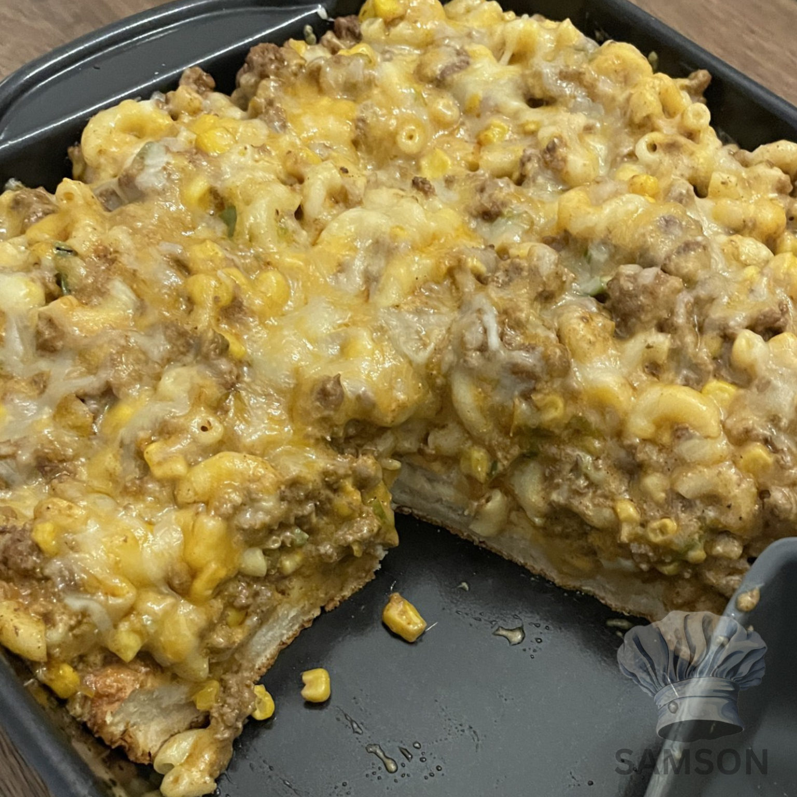
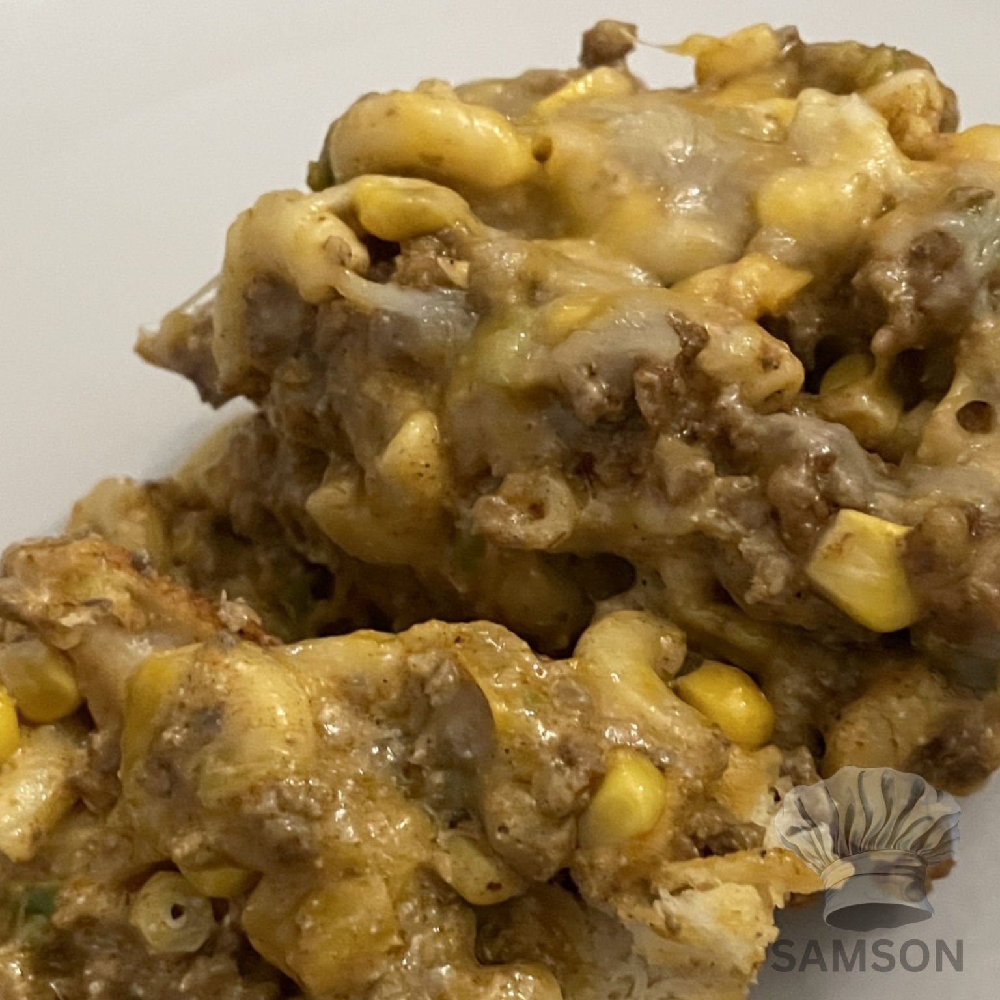

Taco Mac N Cheese Bake - Samson Recipes
Taco Mac N Cheese Bake
Mild | Uses Biscuit Base | Makes 6–8 Servings
 
Navigation
Time Breakdown
Ingredients
Instructions
Serving Suggestions
Storage
🕒 Time Breakdown:
🛒 Ingredients:
🍳 Instructions:
🍽️ Serving Suggestions:
🗃️ Storage:
Recipe by Elisha Samson
Back to start